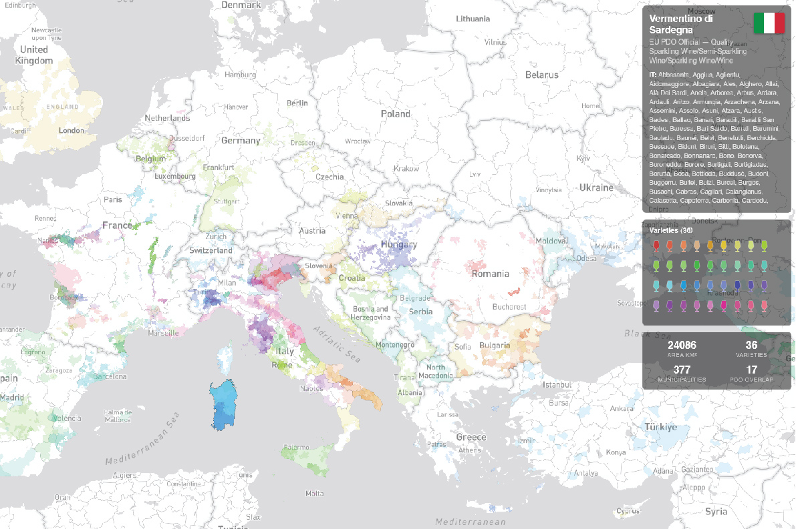

The Wine Map of Europe and the Mediterranean is an interactive geographic atlas cataloguing over 600 designated wine regions across 30+ countries, from the Atlantic coast of Portugal to the Levantine vineyards of Lebanon and Israel.
Each region is enriched with appellation data, dominant grape varieties, production volumes, and protected designation of origin (PDO/PGI) classifications, enabling side-by-side comparison of terroir characteristics across climatic zones.
The map serves viticulture researchers, sommeliers, and wine-trade professionals who need a spatially accurate reference for regional boundaries, harvest statistics, and cross-border denomination overlaps within the broader Mediterranean basin.

Click the image above to open the application in full screen.